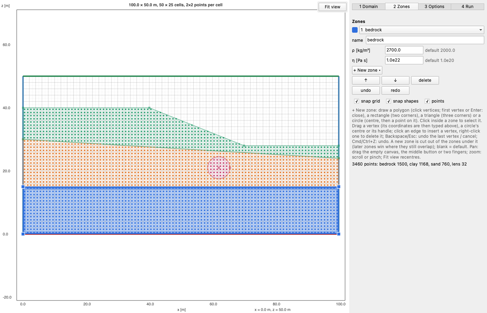

EasyDraw.jl
EasyDraw lets you draw the zones of a 2D (x–z) model, by hand on a domain or over a scanned cross-section, and get them back as data for your solver:
- Finite differences, particles: the zone or a property at any coordinates, e.g. on your grid.
- Finite elements: disjoint regions with shared edges, written as a Gmsh script.
The same zones can be written in code instead of drawn. A point belongs to the last zone that contains it, so a zone drawn later overrides the ones below it.

Install
EasyDraw is not registered yet:
] add https://github.com/ewyser/EasyDraw.jlThis installs the window too (Qt Quick, through QML.jl). using EasyDraw itself is instant: Qt loads with the first window of a session, which takes about 20 s (the next ones open at once). Julia 1.10 or later.
A first model
Draw it:
using EasyDraw
l = draw() # a new domain; returns a Layout, or nothing if cancelledor write it:
l = Layout(; L=[100.0, 50.0], nel=[50, 25], # [0, 100] × [0, 50] m, 50 × 25 cells
zones=[Zone("mantle", Block([0, 0], [100, 40]); rho=3300.0, eta=1e21),
Zone("plume", Ball([50, 15], 8.0); rho=3200.0, eta=1e19)])
save_layout("plume_layout.toml", l)
l = draw("plume_layout.toml") # and edit it in the windowthen use it:
rho = property(l, "rho", 1.0:2.0:99.0, 1.0:2.0:49.0) # on your grid's cell centres
write_geo("plume.geo", l) # or as regions for GmshDocumentation
The documentation has a guide to the window, step by step, and pages on layouts in code, sampling on a grid, meshing with Gmsh, catalogs (what your program offers in the window) and ElastoPlasm.jl, then the reference of every function.
Limits
- 2D (x–z) only. A
widthandnelyextrude a layout along y, andzone_attakes (x, y, z) points. - The picture is not saved. It is a drawing aid only, not stored with the layout.
- Zones are cut only when one is drawn. Moving a zone afterwards can leave an overlap (the later zone wins) or a gap.
Tests
] test EasyDrawThey cover the shapes, layouts and catalogs, sampling, the partition and its .geo, the editor driven as a user would (drawing, snapping, cutting, undo, the picture, options, run, Create…), and the window itself, offscreen.
MIT license.